본 포스트는 서울대학교 Chenglin Fan 교수님의 4190.407 Algorithms (Design and Analysis of Algorithms) 강의 자료(6강 Sorting lower bounds and O(n)-time sorting, 총 51장)를 바탕으로, 강의를 처음 듣는 독자도 논리적 흐름을 따라갈 수 있도록 재구성한 것입니다. 1강 표지에 “Part of Slides Borrowed From Mary Wootters”라고 명시되어 있듯 이 시리즈의 슬라이드는 상당 부분 Stanford의 Mary Wootters 교수님 자료에서 가져온 것이며, 본문의 대섹션 구분은 슬라이드가 스스로 세워 둔 다섯 구획 — Sorting → Today: two models → Comparison-based sorting → Beyond comparison-based sorting algorithms → Recap — 을 그대로 따랐습니다.
한 줄 요약 (TL;DR)
“정렬이 얼마나 어려운가는 알고리즘이 아니라 계산 모형이 결정합니다.”
지난 회차들에서 우리는 \(O(n\log n)\) 정렬을 두 개 손에 넣었습니다 — 최악의 경우에도 \(O(n\log n)\)인 MergeSort와, 기댓값이 \(O(n\log n)\)인 QuickSort입니다. 자연스러운 다음 질문은 “더 잘할 수 있는가”인데, 이번 강의의 답은 “누구에게 묻느냐에 달렸다”입니다. 비교 기반 정렬 모형(comparison-based sorting model) — 원소의 값을 직접 읽지 못하고 두 원소의 대소만 물어볼 수 있는 모형 — 안에서는 불가능합니다. 어떤 비교 기반 알고리즘도 결정 트리(decision tree)로 바꿔 쓸 수 있고, 답이 \(n!\)가지이므로 그 트리의 잎은 \(n!\)개 이상이며, 잎이 \(n!\)개인 이진 트리의 깊이는 \(\log(n!) = \Omega(n\log n)\)이기 때문입니다. 개별 알고리즘을 하나씩 분석하는 대신 모든 알고리즘이 공유하는 형태를 분석했다는 것이 이 증명의 핵심이고, 그 결론은 MergeSort가 이미 최적이라는 낭보이기도 합니다. 하지만 하한이 막고 있는 것은 모형이지 정렬 그 자체가 아닙니다. 원소가 의미 있는 값을 가진다고 가정을 바꾸면 값을 버킷에 던져 넣는 것만으로 \(O(n)\)에 정렬하는 CountingSort가 나오고, 값이 커질 때의 메모리 폭발을 자릿수 단위 반복으로 우회한 RadixSort는 밑 \(r\)을 잘 고르면(\(r=n\)) \(n^{100}\) 이하의 정수 \(n\)개를 \(O(n)\)에 정렬합니다.
1. 정렬 (Sorting)
지금까지 이 강의에서 만든 정렬 알고리즘들을 먼저 늘어놓아 보겠습니다.
- 우리는 \(O(n\log n)\) 시간 알고리즘을 몇 개 보았습니다.
- MergeSort는 최악의 경우(worst-case) 실행 시간이 \(O(n\log n)\)입니다.
- QuickSort는 기댓값(expected) 실행 시간이 \(O(n\log n)\)입니다.
두 알고리즘이 서 있는 자리는 조금 다릅니다. MergeSort의 \(O(n\log n)\)은 어떤 입력에 대해서도 보장되는 약속이고, QuickSort의 \(O(n\log n)\)은 피벗을 뽑는 동전 던지기에 대한 평균입니다. 그럼에도 둘 다 \(n\log n\)이라는 같은 벽 앞에 서 있다는 사실은 그 자체로 시사적입니다.
그래서 묻게 됩니다.
더 잘할 수 있을까요? (Can we do better?)
슬라이드가 내놓은 답은 단정적이지 않습니다 — “누구에게 묻느냐에 달렸습니다(Depends on who you ask…).” 이 짓궂은 유보가 이번 강의의 전체 구조입니다. “정렬을 \(O(n\log n)\)보다 빠르게 할 수 있는가”라는 질문은 사실 불완전한 질문이고, “어떤 계산 모형에서?”를 붙여야 비로소 답할 수 있는 질문이 됩니다.
2. 오늘의 두 모형 (Today: Two Models)
강의는 서로 다른 두 개의 계산 모형(model of computation)을 나란히 놓고, 같은 질문에 두 모형이 정반대로 답하는 것을 보여 줍니다.
- 비교 기반 정렬 모형 (comparison-based sorting model)
- 여기에는 MergeSort, QuickSort, InsertionSort가 모두 포함됩니다.
- 이 모형에 속하는 어떤 알고리즘도 최소 \(\Omega(n\log n)\) 단계를 밟아야 함을 보게 될 것입니다.
- 또 다른 모형 (슬라이드의 표현으로는 “막대 인간 모형보다는 좀 더 합리적인” 모형 — §3.1의 그림에 나오는 막대 인간과 지니 설정을 가리킵니다)
- CountingSort와 RadixSort
- 둘 다 \(O(n)\) 시간에 동작합니다.
두 항목의 문법이 다르다는 점에 주의할 필요가 있습니다. 첫 번째는 “이 모형의 모든 알고리즘이 이러이러하다”는 하한(lower bound) 주장이고, 두 번째는 “이런 알고리즘이 존재한다”는 상한(upper bound) 주장입니다. 하한은 훨씬 강한 진술입니다 — 아직 아무도 발명하지 않은 알고리즘까지 포함해 전부를 한 번에 묶어야 하기 때문입니다. 3절의 증명 전략이 특이해 보이는 이유가 여기 있습니다.
3. 비교 기반 정렬 (Comparison-Based Sorting)
3.1 모형의 정의 (Comparison-Based Sorting Algorithms)
먼저 우리가 지금까지 암묵적으로 지켜 온 규칙을 명시적으로 적어야 합니다.
- 여러분은 원소들의 배열을 정렬하고자 합니다.
- 여러분은 원소의 값에 직접 접근할 수 없습니다. 할 수 있는 일은 오직 두 원소를 비교해 어느 쪽이 크고 어느 쪽이 작은지 알아내는 것뿐입니다.
이 제약이 인위적으로 보일 수 있지만, 실은 우리가 지금까지 작성한 모든 정렬 알고리즘이 이미 이 제약 안에서 동작하고 있었습니다. MergeSort의 MERGE도, QuickSort의 PARTITION도, 원소를 놓고 한 일이라고는 A[i] < A[j]를 묻는 것뿐이었으니까요.
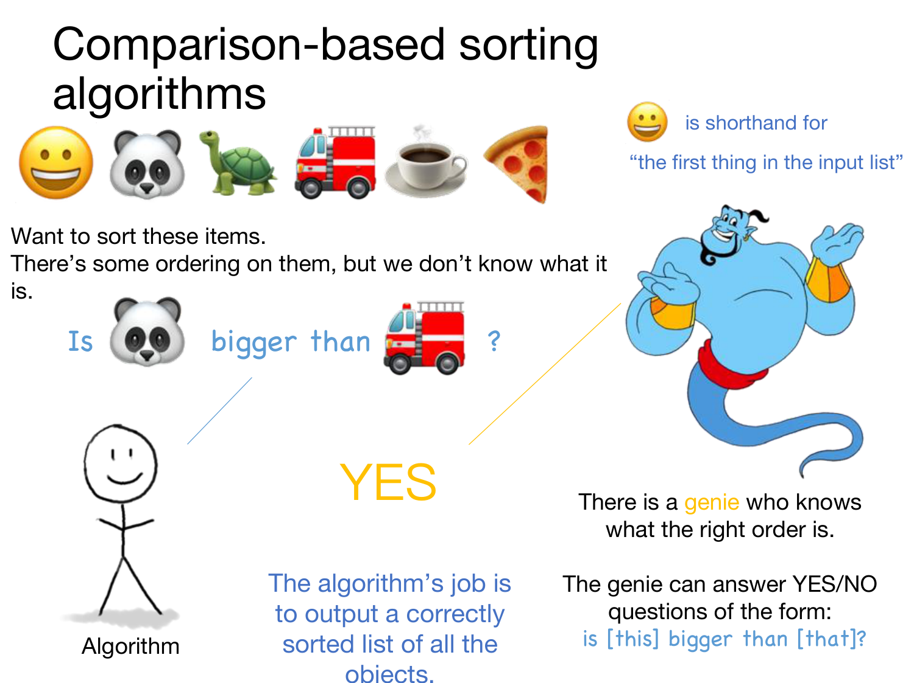
is [this] bigger than [that]? 형태의 예/아니오 질문만 던질 수 있고(가운데 파란 글씨 Is 🐼 bigger than 🚒 ?), 지니는 노란 글씨 YES처럼 한 비트로만 답합니다. 그림이 강조하는 것은 두 가지입니다 — 첫째, 알고리즘은 원소의 값을 결코 들여다보지 못합니다. 둘째, 그럼에도 알고리즘이 해야 할 일은 아래 파란 글씨처럼 모든 객체를 올바르게 정렬한 리스트를 출력하는 것입니다. 정보는 비교당 한 비트씩만 들어오는데 출력해야 할 답은 \(n!\)가지 중 하나라는 이 불균형이 곧 §3.8의 하한을 낳습니다.3.2 우리가 본 알고리즘들은 모두 이렇게 동작합니다
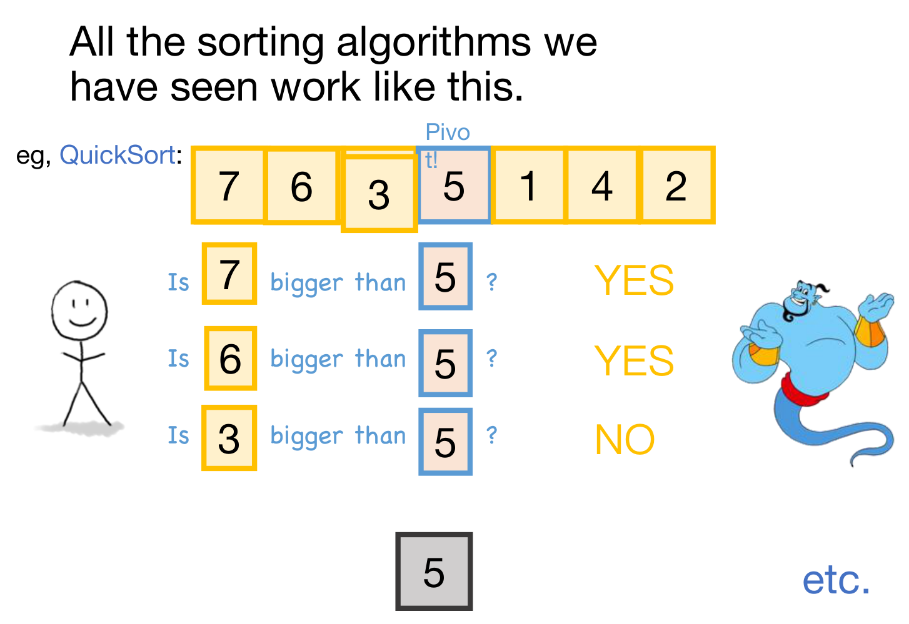
[7, 6, 3, 5, 1, 4, 2]에서 파란 테두리로 강조된 5가 피벗이고, 아래 세 줄은 PARTITION이 지니에게 던지는 질문들입니다 — Is 7 bigger than 5? → YES, Is 6 bigger than 5? → YES, Is 3 bigger than 5? → NO. 오른쪽 노란 글씨 YES/NO가 지니(오른쪽 그림)의 답이고, 맨 아래 회색 상자의 5는 그 답들에 따라 피벗이 제자리를 찾아가는 과정을 나타내며 etc.는 같은 절차가 남은 원소들에 대해 계속됨을 뜻합니다. 이 그림의 논점은 QuickSort가 배열의 숫자를 “읽어서” 무언가를 계산하는 것이 아니라, 오직 대소 질문의 답만으로 움직인다는 것입니다 — 숫자 \(7, 6, 3\)을 전혀 모르는 채 YES, YES, NO만 받아도 PARTITION은 똑같이 동작합니다.MergeSort도, InsertionSort도 마찬가지입니다. 우리가 아는 정렬 알고리즘 전부가 이 모형 안에 있습니다. 그러니 이 모형 전체에 대한 하한을 증명할 수 있다면, 그것은 우리가 아는 모든 정렬 알고리즘에 동시에 적용되는 하한이 됩니다.
3.3 \(\Omega(n\log n)\) 하한 (Lower Bound of \(\Omega(n\log n)\))
- 어떤 결정론적(deterministic) 비교 기반 정렬 알고리즘도 \(\Omega(n\log n)\) 단계를 밟아야 합니다.
- 어떤 무작위(randomized) 비교 기반 정렬 알고리즘도 기댓값으로 \(\Omega(n\log n)\) 단계를 밟아야 합니다.
슬라이드가 보라색으로 덧붙인 주석이 이 정리의 무게를 말해 줍니다 — “이것은 우리가 아는 모든 정렬 알고리즘을 포괄합니다!!!”
그러면 이것을 어떻게 증명할까요? 슬라이드는 두 개의 선택지를 제시하는데, 두 번째가 압권입니다.
- 모든 비교 기반 알고리즘을 하나씩 차례로 놓고 분석한다.
- 그러지 마시오(Don’t do that).
첫 번째 길이 왜 불가능한지는 분명합니다. 비교 기반 알고리즘은 무한히 많고, 아직 발명되지 않은 것까지 포함해야 하니 열거 자체가 성립하지 않습니다. 그래서 강의는 다른 길을 택합니다.
모든 비교 기반 정렬 알고리즘이 하나의 결정 트리를 낳는다고 논증한 다음, 결정 트리를 분석한다.
개별 알고리즘 대신 모든 알고리즘이 공유하는 공통 형태를 잡고, 그 형태에 대해 증명하는 것입니다. 하한 증명이 대체로 이런 모양을 띱니다 — 대상을 하나하나 상대하는 대신, 대상 전체가 반드시 통과해야 하는 좁은 문을 찾아 그 문의 크기를 잽니다.
3.4 결정 트리 (Decision Trees)
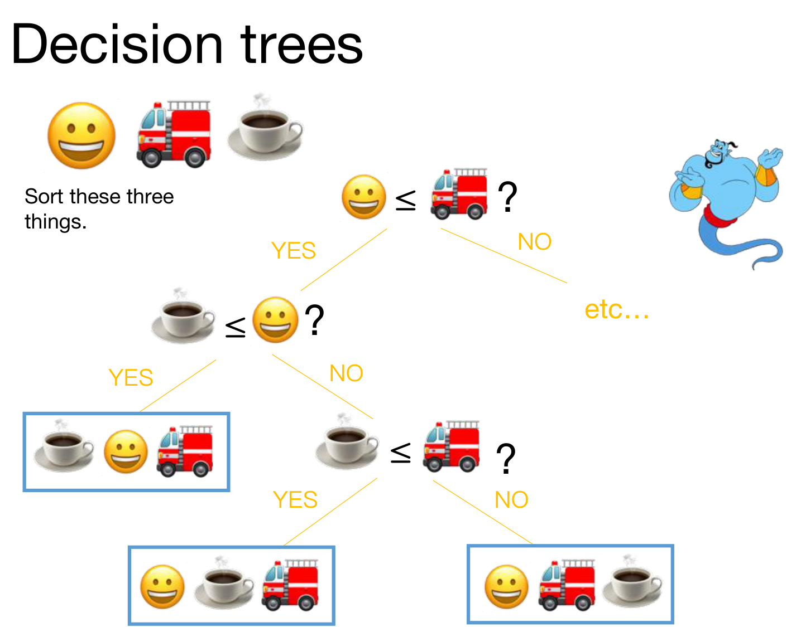
😀 ≤ 🚒 ?에서 시작해 노란 간선 YES/NO를 따라 내려가며 질문이 이어집니다. 왼쪽(YES) 가지에서는 다음 질문 ☕ ≤ 😀 ?가 나오고, 거기서 다시 YES면 파란 테두리 상자 [☕, 😀, 🚒]라는 답에 도달합니다. NO면 한 번 더 물어(☕ ≤ 🚒 ?) [😀, ☕, 🚒] 또는 [😀, 🚒, ☕]로 갈라집니다. 오른쪽 가지의 etc…는 대칭적인 나머지 경우를, 오른쪽 위의 지니는 이 질문들에 답해 주는 존재를 나타냅니다. 핵심은 파란 테두리 상자, 곧 잎(leaf)마다 서로 다른 하나의 정렬 결과가 놓여 있다는 점입니다 — 세 원소의 가능한 순서는 \(3! = 6\)가지이므로 이 트리에는 잎이 여섯 개 있어야 합니다.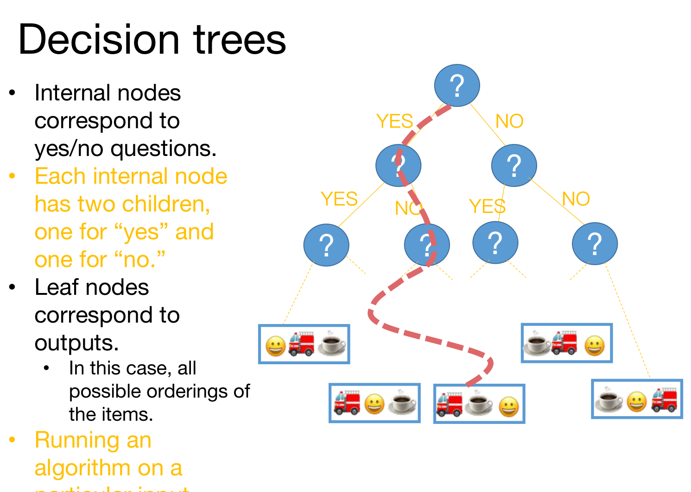
YES/NO 간선이 보여 주듯 모든 내부 노드는 정확히 두 개의 자식을 가집니다 — 곧 이 트리는 이진 트리입니다. 맨 아래 파란 테두리 상자들이 잎 노드(leaf node)로 알고리즘의 출력, 이 경우 원소들의 가능한 모든 순서에 대응합니다. 붉은 굵은 점선은 어떤 특정 입력이 주어졌을 때 알고리즘이 실제로 밟아 가는 경로를 표시한 것으로, 뿌리에서 출발해 각 질문의 답에 따라 YES 또는 NO 가지를 골라 내려가다 하나의 잎에서 멈춥니다. 원본 슬라이드의 마지막 항목은 화면 밖으로 잘려 나갔지만, 이 붉은 경로와 이어지는 두 장(§3.6–3.7)이 그 내용을 대신 말해 줍니다 — 특정 입력에 대해 알고리즘을 실행하는 일은 곧 뿌리에서 잎까지 한 경로를 따라 내려가는 일입니다.정리하면 결정 트리의 각 요소는 다음과 같이 대응됩니다.
| 결정 트리 | 알고리즘 |
|---|---|
| 내부 노드 | 지니에게 던지는 하나의 비교 질문 |
두 개의 자식 간선 (YES / NO) |
그 질문에 대한 답 |
| 잎 노드 | 알고리즘이 내놓는 출력(하나의 정렬 순서) |
| 뿌리에서 잎까지의 한 경로 | 하나의 입력에 대한 알고리즘의 실행 |
| 경로의 길이 | 그 실행에서 수행한 비교 횟수 |
3.5 비교 기반 알고리즘은 결정 트리처럼 생겼습니다
앞 절의 대응이 말뿐이 아님을 보이기 위해, 슬라이드는 실제 알고리즘 하나를 통째로 결정 트리로 펼쳐 보입니다.
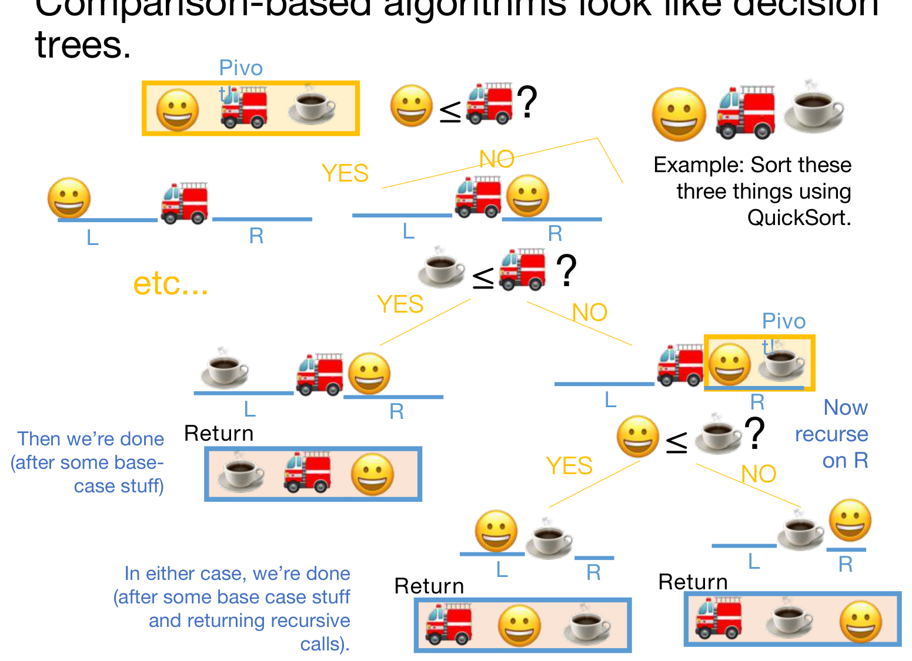
😀 ≤ 🚒 ?가 뿌리 노드입니다. 아래로 내려가는 파란 가로선과 L/R 표시는 PARTITION이 만들어 낸 왼쪽·오른쪽 부분 배열을 나타냅니다 — YES 쪽에서는 웃는 얼굴이 L, 소방차가 R로 갈라지고, NO 쪽에서는 소방차가 L, 웃는 얼굴이 R로 갈라집니다. 그다음 층의 질문 ☕ ≤ 🚒 ?는 재귀 호출이 던지는 비교이며, 오른쪽 아래의 노란 상자와 파란 글씨 Now recurse on R이 재귀가 이어지는 지점을 표시합니다. 분홍색 Return 상자들이 잎, 곧 최종 출력입니다. 왼쪽 아래 파란 글씨 “(기저 사례 처리와 재귀 호출 반환을 마치면) 어느 경우든 끝납니다”가 말하듯, 비교가 아닌 작업들(재귀 호출, 배열 복사, 기저 사례 처리)은 트리에 나타나지 않습니다. 트리가 세는 것은 오직 비교뿐이며, 따라서 경로 길이는 실제 실행 시간의 하한이 됩니다 — 하한을 증명하려는 우리에게는 이것으로 충분합니다.3.6 특정 입력에서의 실행 시간 (Q: What’s the Runtime on a Particular Input?)
A: 적어도 뿌리에서 해당 잎까지의 경로 길이만큼입니다.
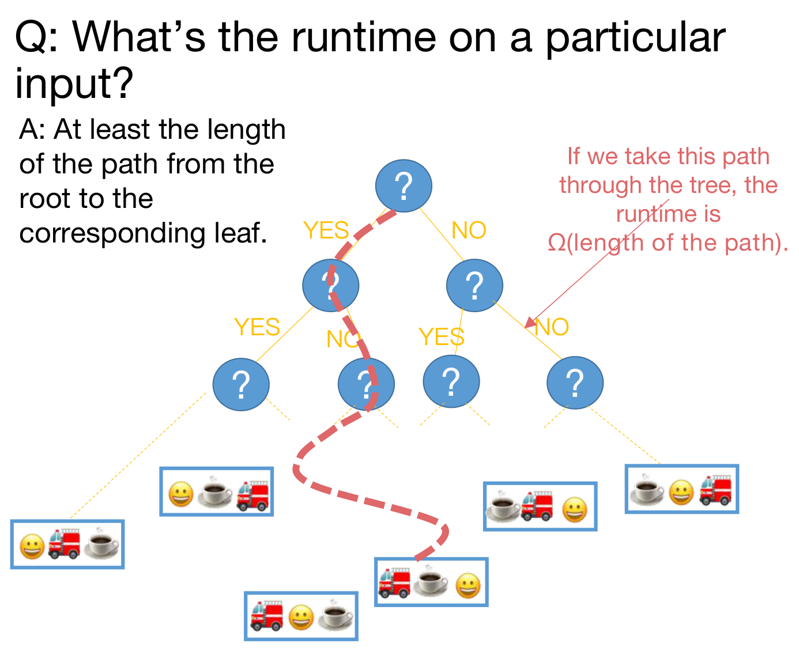
YES/NO는 그 답, 아래쪽 파란 테두리 상자들은 가능한 출력들이며, 붉은 점선은 어떤 특정 입력이 지나가는 경로입니다. 오른쪽 붉은 화살표와 글씨가 결론을 말합니다 — “이 경로를 따라간다면, 실행 시간은 \(\Omega(\text{경로의 길이})\)이다.” 부등호의 방향이 중요합니다. 경로 위의 노드 하나하나가 실제로 수행된 비교 한 번씩에 대응하므로 실행 시간은 경로 길이 이상이며, 비교 외의 작업(재귀 호출, 원소 이동 등) 때문에 그보다 더 걸릴 수는 있어도 결코 더 적게 걸릴 수는 없습니다.3.7 최악의 경우 실행 시간 (Q: What’s the Worst-Case Runtime?)
A: 적어도 \(\Omega(\text{가장 긴 경로의 길이})\)입니다.
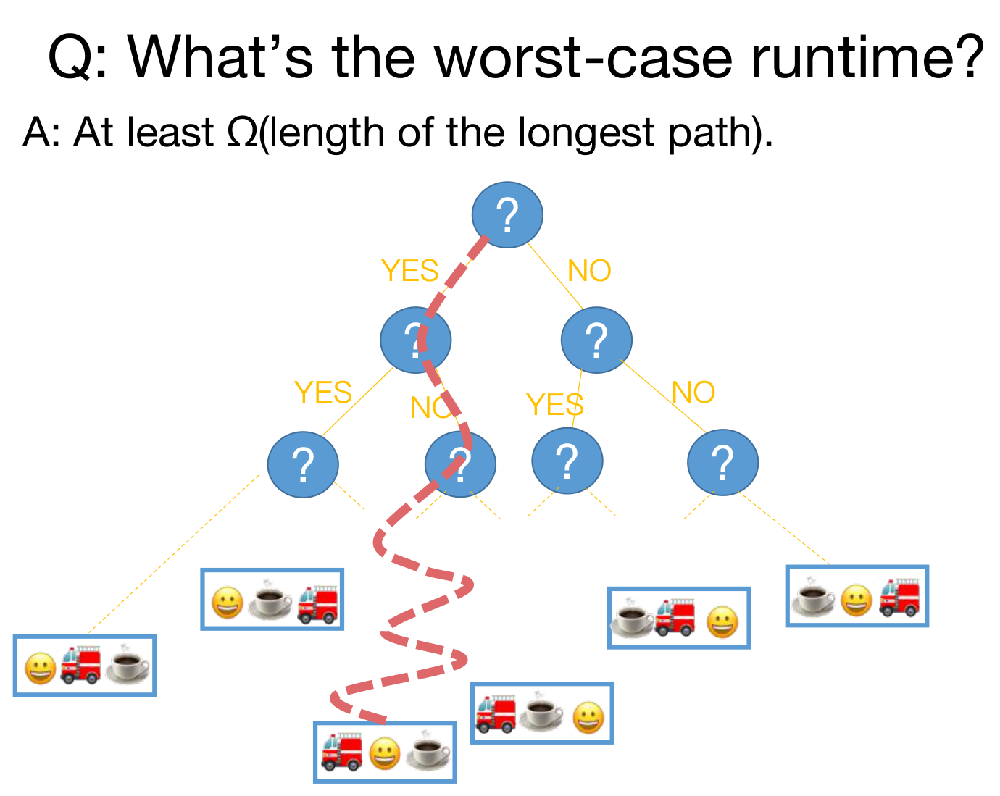
여기까지 오면 문제가 완전히 바뀌어 있습니다. 처음에 우리는 “모든 비교 기반 정렬 알고리즘”이라는 손에 잡히지 않는 대상을 상대해야 했는데, 이제는 “잎이 충분히 많은 이진 트리의 깊이”라는 순수한 조합론 문제만 남았습니다.
3.8 가장 긴 경로는 얼마나 긴가 (How Long Is the Longest Path?)
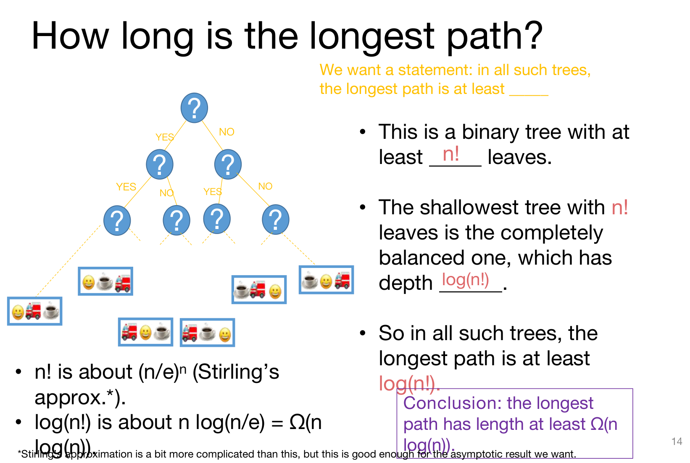
YES/NO는 답, 파란 테두리 상자는 가능한 출력), 오른쪽 노란 글씨가 증명하려는 명제의 형태를 제시합니다 — “그런 모든 트리에서, 가장 긴 경로는 적어도 ____ 이다.” 오른쪽 세 항목의 빈칸을 붉은 글씨가 채웁니다. 첫째, 이것은 잎이 적어도 \(n!\)개인 이진 트리입니다. 둘째, 잎이 \(n!\)개인 트리 중 가장 얕은 것은 완전 균형 트리이며 그 깊이는 \(\log(n!)\)입니다. 셋째, 따라서 그런 모든 트리에서 가장 긴 경로는 적어도 \(\log(n!)\)입니다. 왼쪽 아래 두 항목이 이 \(\log(n!)\)을 익숙한 형태로 바꿉니다 — 스털링 근사로 \(n! \approx (n/e)^n\)이므로 \(\log(n!) \approx n\log(n/e) = \Omega(n\log n)\)입니다. 오른쪽 아래 보라색 테두리 상자가 결론입니다 — “가장 긴 경로의 길이는 적어도 \(\Omega(n\log n)\)이다.” 맨 아래 작은 각주는 스털링 근사가 실제로는 이보다 복잡하지만 우리가 원하는 점근적 결과에는 이 정도로 충분하다고 밝히고 있습니다(원본 슬라이드에서 이 각주가 위쪽 수식과 겹쳐 인쇄되어 있습니다).세 단계를 하나씩 채워 보겠습니다.
① 왜 잎이 \(n!\)개 이상인가.
- 크기 \(n\)인 배열의 가능한 정렬 순서는 정확히 \(n!\)가지입니다.
- 알고리즘은 모든 입력에 대해 올바른 답을 내야 하므로, 이 \(n!\)가지 답이 각각 어떤 잎에는 놓여 있어야 합니다.
- 만약 서로 다른 두 순서가 같은 잎을 공유한다면, 그 잎에 도달하는 두 입력에 대해 알고리즘은 똑같은 출력을 내게 되고, 둘 중 하나는 반드시 틀립니다.
- 따라서 잎의 개수는 \(n!\) 이상입니다.
② 왜 깊이가 \(\log(n!)\) 이상인가.
- 깊이가 \(d\)인 이진 트리는 잎을 최대 \(2^d\)개 가질 수 있습니다. 층을 하나 내려갈 때마다 노드 수가 많아야 두 배가 되기 때문입니다.
- 우리 트리는 잎이 \(n!\)개 이상이므로 \(2^d \ge n!\)이어야 하고, 양변에 밑이 \(2\)인 로그를 취하면 다음을 얻습니다.
\[d \;\ge\; \log_2(n!)\]
- 이 부등식을 뒤집어 읽은 것이 슬라이드의 표현입니다 — 잎을 \(n!\)개 담으면서 가장 얕을 수 있는 트리가 완전 균형 트리이고, 그 깊이가 \(\log(n!)\)입니다.
③ 왜 \(\log(n!) = \Omega(n\log n)\)인가.
- 스털링 근사(Stirling’s approximation)에 따르면 \(n!\)은 대략 \(\left(\dfrac{n}{e}\right)^{n}\)입니다.
- 여기에 로그를 취하면 다음과 같습니다.
\[ \begin{aligned} \log_2(n!) &\approx \log_2\left(\left(\frac{n}{e}\right)^{n}\right) && (\text{스털링 근사}) \\ &= n \log_2\left(\frac{n}{e}\right) && (\log a^b = b\log a) \\ &= n\log_2 n - n\log_2 e \\ &= \Omega(n\log n) && (\text{둘째 항은 } n\log_2 n \text{에 흡수된다}) \end{aligned} \]
- 마지막 줄에서 \(n\log_2 e\)는 \(n\)에 상수를 곱한 항이므로, \(n\log_2 n\)에 비해 점근적으로 무시됩니다.
3.9 정리와 증명 요약 (Theorem and Proof Recap)
지금까지의 논증을 슬라이드가 네 줄로 압축합니다.
정리. 어떤 결정론적 비교 기반 정렬 알고리즘도 \(\Omega(n\log n)\) 단계를 밟아야 한다.
증명 요약:
- 어떤 결정론적 비교 기반 알고리즘도 잎이 \(n!\)개인 결정 트리로 표현할 수 있습니다. (§3.4–3.5, §3.8①)
- 최악의 경우 실행 시간은 적어도 그 결정 트리의 깊이입니다. (§3.6–3.7)
- 잎이 \(n!\)개인 모든 결정 트리는 깊이가 \(\Omega(n\log n)\)입니다. (§3.8②③)
- 따라서 어떤 비교 기반 정렬 알고리즘도 최악의 경우 실행 시간이 적어도 \(\Omega(n\log n)\)입니다. \(\blacksquare\)
3.10 여담: 무작위 알고리즘은 어떤가 (Aside: What About Randomized Algorithms?)
앞의 증명은 결정론적 알고리즘만 다루었습니다. 결정 트리를 그릴 수 있었던 이유가 바로 결정론성이기 때문입니다 — 어떤 노드에서 어떤 질문을 던질지가 지금까지 받은 답들로 완전히 결정되어야 트리가 하나로 정해집니다. 그렇다면 QuickSort처럼 동전을 던지는 알고리즘은 이 하한을 빠져나갈 수 있을까요?
정리. 어떤 무작위 비교 기반 정렬 알고리즘도 기댓값으로 \(\Omega(n\log n)\) 단계를 밟아야 한다.
- 증명: 결정론적 경우와 같은 아이디어를 씁니다.
- 슬라이드는 “이 수업에서 이 증명에 대한 책임은 없습니다”라고 명시하면서, 보라색 글씨로 “직접 증명해 보세요!”라고 덧붙이고는
\end{Aside}로 이 여담을 닫습니다.
3.11 나쁜 소식, 그리고 좋은 소식 (So That’s Bad News)
두 정리를 나란히 놓으면 결론은 분명합니다. 우리가 아는 모든 정렬 알고리즘 — 그리고 앞으로 누군가 비교만으로 만들어 낼 모든 정렬 알고리즘 — 은 \(n\log n\)의 벽을 넘을 수 없습니다.
그런데 같은 사실을 뒤집어 보면 전혀 다른 소식이 됩니다.
밝은 면을 보자면, MergeSort는 최적입니다! (On the bright side, MergeSort is optimal!)
슬라이드의 표현을 그대로 옮기면 — “이런 하한의 멋진 점 가운데 하나가 이것입니다: 언제 승리를 선언해도 되는지 알게 된다는 것이지요.”
상한만 알 때 우리는 늘 불안합니다. \(O(n\log n)\) 알고리즘을 손에 넣어도 “혹시 더 빠른 방법이 있는데 내가 못 찾은 것은 아닐까”라는 의심이 남습니다. 하한은 그 의심을 끝냅니다. 하한과 상한이 만나는 순간, 그 알고리즘은 개선의 여지가 없는 것이 아니라 개선이 불가능한 것이 됩니다. MergeSort가 정확히 그 자리에 있습니다.
4. 비교 기반 정렬을 넘어서 (Beyond Comparison-Based Sorting Algorithms)
하한이 막고 있는 것은 모형이지 정렬이라는 문제 자체가 아닙니다. 벽을 넘을 수 없다면, 벽이 서 있는 땅을 바꾸면 됩니다.
4.1 또 다른 계산 모형 (Another Model of Computation)
정렬하려는 원소들이 의미 있는 값(meaningful values)을 가진다.
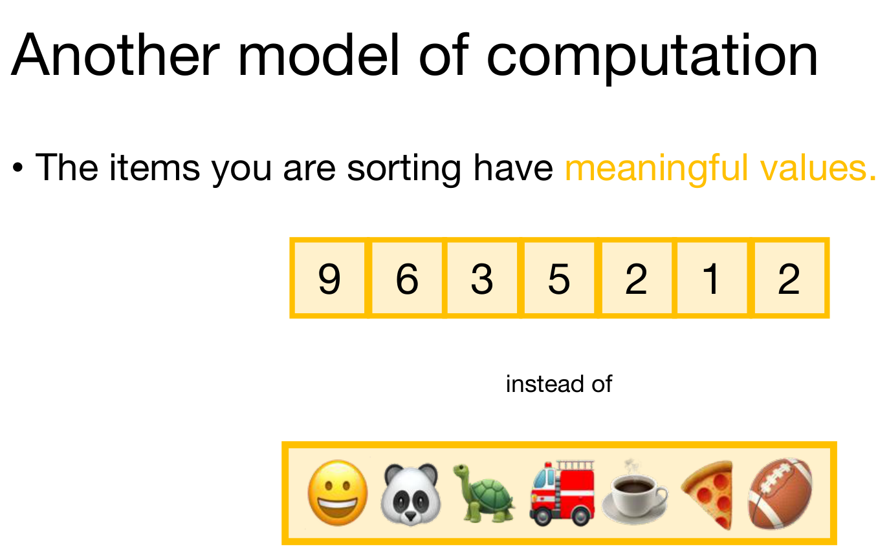
9, 6, 3, 5, 2, 1, 2가 들어 있고, 가운데 검은 글씨 instead of 아래의 노란 배열에는 이모지(웃는 얼굴 · 판다 · 거북이 · 소방차 · 커피 · 피자 · 미식축구공)가 들어 있습니다. 아래쪽 이모지 배열이 §3의 비교 기반 모형입니다 — 원소는 이름표일 뿐이어서 지니에게 물어보는 것 말고는 알 수 있는 것이 없습니다. 위쪽 숫자 배열이 이번 절의 새 모형으로, 원소를 집어 들면 그 값을 바로 읽을 수 있습니다. 노란 글씨로 강조된 “meaningful values”가 정확히 그 차이를 가리킵니다. 값을 읽을 수 있다는 것은 비교 한 번에 한 비트씩 정보를 긁어모으는 대신 원소 하나에서 \(\log(\text{값의 범위})\) 비트를 한꺼번에 얻는다는 뜻이고, 그래서 §3의 정보 이론적 하한이 더 이상 적용되지 않습니다.4.2 이것이 왜 도움이 되는가: CountingSort (Why Might This Help?)
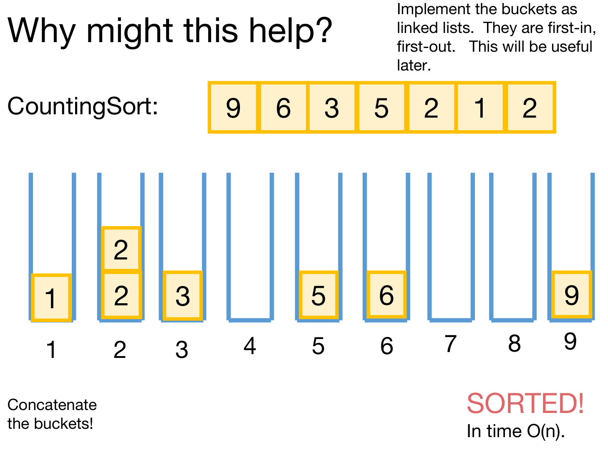
[9, 6, 3, 5, 2, 1, 2]이고, 그 아래 파란 U자 모양들이 \(1\)부터 \(9\)까지 번호가 붙은 버킷(bucket)입니다. 각 원소를 자기 값과 같은 번호의 버킷에 그대로 던져 넣은 결과가 그림의 상태입니다 — 버킷 \(1\)에 1, 버킷 \(2\)에 2가 두 개 쌓여 있고, 버킷 \(3, 5, 6, 9\)에 각각 하나씩, 버킷 \(4, 7, 8\)은 비어 있습니다. 왼쪽 아래 검은 글씨 “버킷들을 이어 붙이세요!”가 마지막 단계이고, 오른쪽 아래 붉은 글씨 SORTED!와 검은 글씨 “\(O(n)\) 시간에”가 결과입니다. 오른쪽 위 검은 주석이 구현상의 약속을 하나 덧붙이는데, 이것이 뒤에서 결정적으로 쓰입니다 — 버킷은 연결 리스트로 구현하며, 선입선출(first-in, first-out)입니다. 슬라이드 자신이 “이것이 나중에 유용할 것”이라고 예고하고 있고, 그 자리가 §4.5의 정확성 증명입니다.값이 \(\{1, 2, \ldots, k\}\) 범위의 정수라고 할 때,
- 번호가 \(1\)부터 \(k\)까지인 버킷 \(k\)개를 만듭니다.
- 배열을 한 번 훑으며 각 원소를 자기 값에 해당하는 버킷에 넣습니다.
- 버킷을 번호 순서대로 이어 붙입니다.
비교는 단 한 번도 하지 않습니다. 2단계에서 원소의 값을 읽어 버킷 번호로 바로 쓰기 때문이며, 이것이 §3의 모형에서는 금지되어 있던 바로 그 동작입니다.
실행 시간을 세어 보면, 버킷 \(k\)개를 초기화하는 데 \(O(k)\), 원소 \(n\)개를 각자의 버킷에 넣는 데 \(O(n)\), 이어 붙이는 데 \(O(n + k)\)가 들어 전체 \(O(n + k)\)입니다. 슬라이드가 \(O(n)\)이라고 적은 것은 값의 범위 \(k\)가 \(n\)에 비해 크지 않은 상황을 염두에 둔 것이며, 바로 그 전제가 다음 절의 주제입니다.
4.3 가정 (Assumptions)
\(O(n)\)이라는 결과는 공짜가 아닙니다. 슬라이드는 이 모형이 요구하는 가정 세 가지를 명시합니다.
- 무언가를 어느 버킷에 넣어야 할지 알 수 있어야 합니다.
- 즉 원소를 비교로만이 아니라 직접 평가할 수 있다고 가정합니다.
- 어떤 값들이 나타날 수 있는지 미리 알아야 합니다.
- 그런 값이 너무 많지는 않다고 가정해야 합니다.
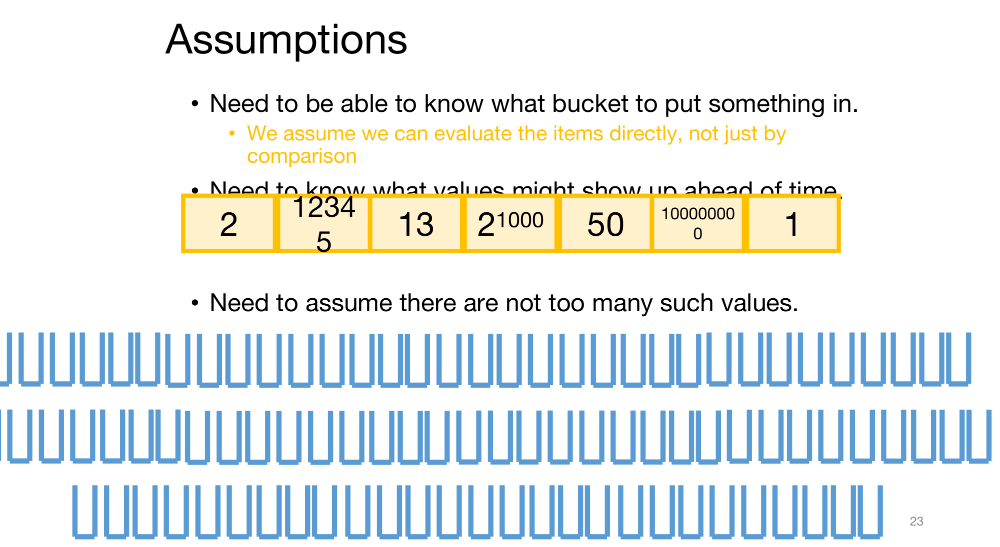
2, 12345, 13, 2^1000, 50, 1000000000, 1 — 이 들어 있습니다. 원소는 일곱 개뿐인데 값의 범위는 천문학적입니다. 그 아래 화면을 가득 채우며 세 줄로 이어지는 수십 개의 파란 버킷이 이 배열을 CountingSort로 정렬하려 할 때 필요한 버킷의 수를 시각적으로 표현한 것입니다 — 그림에 그려진 것은 일부일 뿐이고, 실제로는 \(2^{1000}\)개의 버킷이 필요합니다. 즉 CountingSort의 비용은 원소의 개수 \(n\)이 아니라 값의 범위에 비례하며, 값이 흩어져 있으면 대부분의 버킷이 빈 채로 메모리만 잡아먹습니다.CountingSort의 \(O(n)\)은 값의 범위가 \(O(n)\)일 때의 이야기입니다. 위 그림처럼 원소는 일곱 개인데 값 하나가 \(2^{1000}\)이면, 버킷 초기화만으로 우주의 수명을 다 써도 끝나지 않습니다.
“정렬은 \(\Omega(n\log n)\)이다”와 “정렬은 \(O(n)\)이다”가 모순처럼 보이지만 둘 다 참인 이유가 여기 있습니다. 두 진술은 서로 다른 가정 위에 서 있습니다. §3의 하한은 원소에 대해 아무것도 가정하지 않는 대신 \(n\log n\)을 요구하고, CountingSort는 원소가 작은 정수라는 강한 가정을 받는 대신 \(O(n)\)을 내놓습니다. 어느 쪽이 “옳은” 모형인지는 — 슬라이드가 §5에서 말하듯 — 논쟁의 여지가 있는 문제입니다.
4.4 RadixSort
CountingSort의 약점은 분명합니다. 값이 커지면 버킷이 폭발합니다. RadixSort는 그 폭발을 자릿수 단위로 쪼개서 피합니다.
- 크기가 최대 \(M\)인 정수를 정렬하기 위한 알고리즘입니다.
- 더 일반적으로는 문자열을 사전식으로 정렬할 때도 쓸 수 있습니다.
- CountingSort보다 적은 공간을 쓸 수 있습니다.
- 아이디어: 먼저 가장 낮은 자릿수(least-significant digit)에 대해 CountingSort를 하고, 그다음 그 위 자릿수에 대해, 또 그다음 자릿수에 대해… 이렇게 반복합니다.
값 전체를 버킷 번호로 쓰는 대신 자릿수 하나만 버킷 번호로 쓰기 때문에, 십진수라면 버킷은 언제나 열 개면 충분합니다. 값이 아무리 커져도 버킷 수는 늘지 않고, 대신 반복 횟수가 늘어납니다.
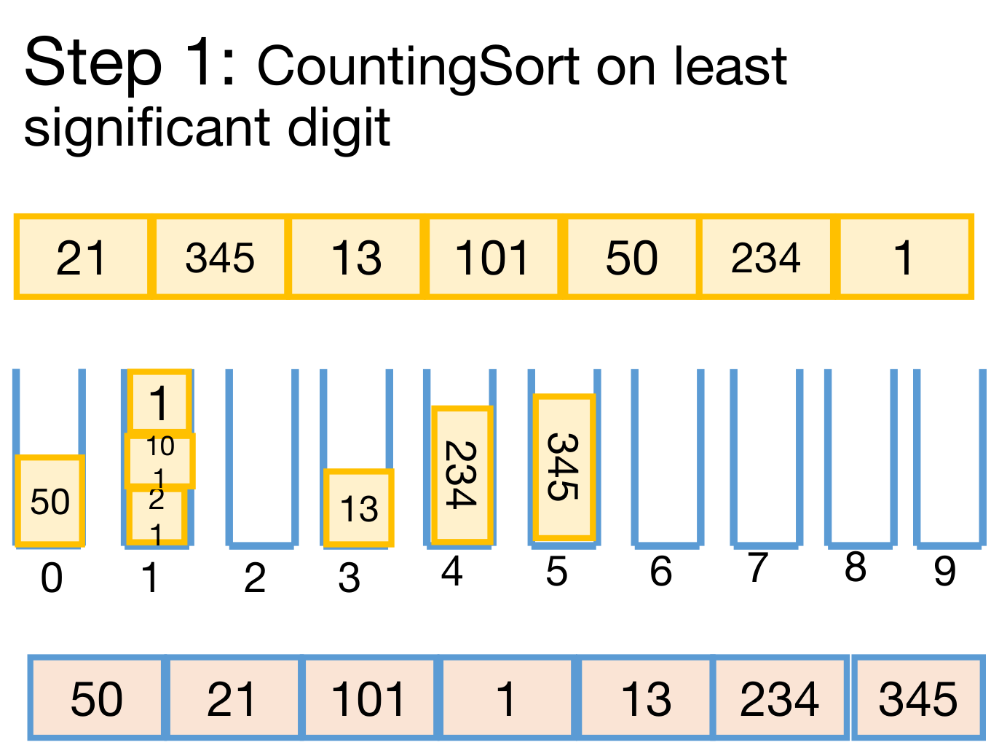
[21, 345, 13, 101, 50, 234, 1]이고, 가운데 파란 버킷들은 \(0\)부터 \(9\)까지 일의 자리 숫자로 번호가 붙어 있습니다. 각 원소는 자기 일의 자리에 해당하는 버킷에 들어갑니다 — 50은 버킷 \(0\)에, 21·101·1은 모두 일의 자리가 \(1\)이므로 버킷 \(1\)에 들어간 순서대로 아래에서 위로 쌓이고, 13은 버킷 \(3\), 234는 버킷 \(4\), 345는 버킷 \(5\)에 들어갑니다. 맨 아래 분홍 배열이 버킷을 \(0\)부터 순서대로 이어 붙인 결과 [50, 21, 101, 1, 13, 234, 345]입니다. 아직 전체가 정렬되어 있지는 않지만 일의 자리만 놓고 보면 오름차순(\(0,1,1,1,3,4,5\))임을 확인할 수 있습니다. 버킷 \(1\) 안에서 21, 101, 1의 순서가 입력에서의 등장 순서와 같다는 점 — 곧 선입선출 — 이 다음 반복에서 결정적입니다.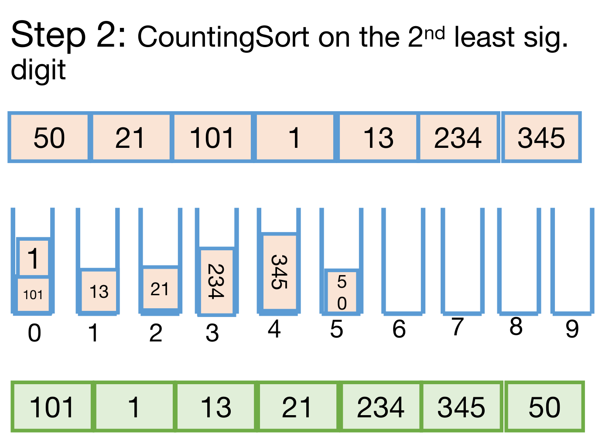
[50, 21, 101, 1, 13, 234, 345]이고, 이번에는 십의 자리로 버킷을 나눕니다. 101과 1은 십의 자리가 \(0\)이므로 버킷 \(0\)에(그리고 앞 반복의 순서를 유지한 채 101이 아래, 1이 위로), 13은 버킷 \(1\), 21은 버킷 \(2\), 234는 버킷 \(3\), 345는 버킷 \(4\), 50은 버킷 \(5\)에 들어갑니다. 맨 아래 초록 배열이 이어 붙인 결과 [101, 1, 13, 21, 234, 345, 50]입니다. 이제 이 배열은 아래 두 자리(\(01, 01, 13, 21, 34, 45, 50\))를 기준으로 정렬되어 있습니다. 버킷 \(0\) 안에서 101이 1보다 앞에 오는 이유가 바로 앞 반복에서 그 순서였기 때문이라는 점에 주목해야 합니다 — 이것이 §4.5 증명의 CASE 2입니다.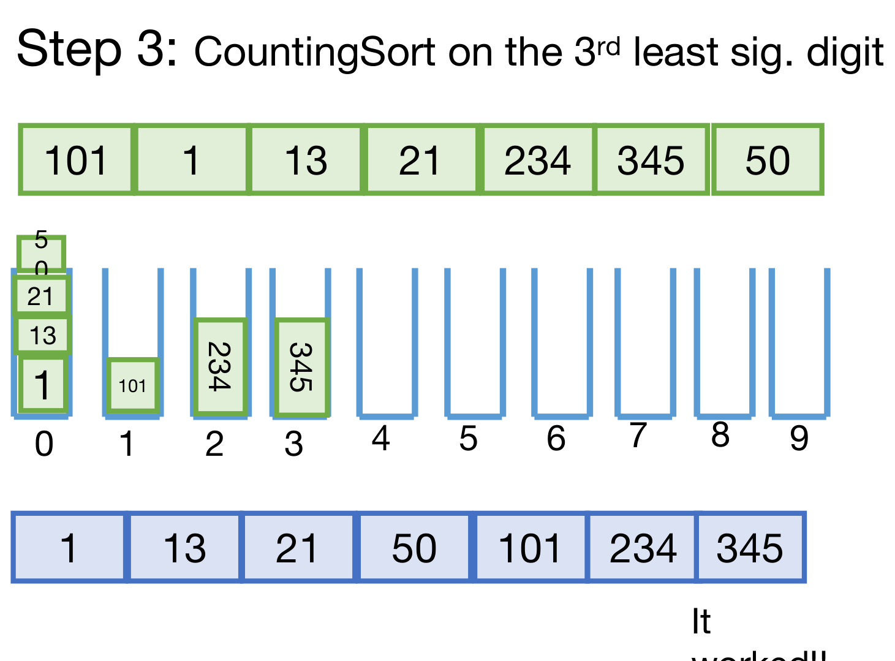
[101, 1, 13, 21, 234, 345, 50]이고, 이번에는 백의 자리로 나눕니다. 백의 자리가 없는(곧 \(0\)인) 50·21·13·1은 모두 버킷 \(0\)에 앞 반복의 순서를 유지한 채 쌓이고, 101은 버킷 \(1\), 234는 버킷 \(2\), 345는 버킷 \(3\)에 들어갑니다. 맨 아래 파란 배열이 최종 결과 [1, 13, 21, 50, 101, 234, 345]이며, 오른쪽 아래 검은 글씨 “It worked!!”가 확인해 줍니다. 세 자리 수를 정렬하는 데 세 번의 반복이면 충분했다는 것이 이 예시의 요점입니다.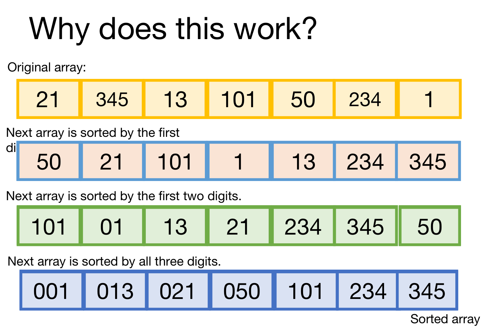
001, 013, 021, 050, 101, 234, 345처럼 앞을 \(0\)으로 채워 표시된 것은, “처음 \(k\)자리로 정렬됨”이라는 말이 모든 수를 같은 자릿수로 보았을 때의 이야기임을 분명히 하기 위함입니다. 이 그림이 그대로 다음 절 귀납 가설의 문장이 됩니다.4.5 RadixSort의 정확성 (RadixSort Is Correct)
앞 그림이 보여 준 규칙성을 귀납법으로 바꾸어 쓰면 증명이 됩니다. 슬라이드는 “귀납 가설이 무엇인가?”라는 질문을 먼저 던지는데, 답은 그림에서 이미 읽을 수 있습니다.
- 귀납 가설(inductive hypothesis): \(k\)번째 반복이 끝난 뒤, 배열은 가장 낮은 \(k\)개 자릿수를 기준으로 정렬되어 있다.
- 기저 사례(base case): “가장 낮은 \(0\)개 자릿수로 정렬되어 있다”는 것은 아직 아무것도 정렬되지 않았다는 뜻이므로, 귀납 가설은 \(k=0\)에서 자명하게 성립합니다.
- 귀납 단계(inductive step): \(k=i-1\)에서 성립하면 \(k=i\)에서도 성립함을 보여야 합니다.
- 결론: 귀납 가설이 모든 \(k\)에 대해 성립하므로, 마지막 반복이 끝나면 배열은 모든 자릿수를 기준으로 정렬되어 있습니다. 곧 정렬된 것입니다!
남은 것은 귀납 단계입니다.
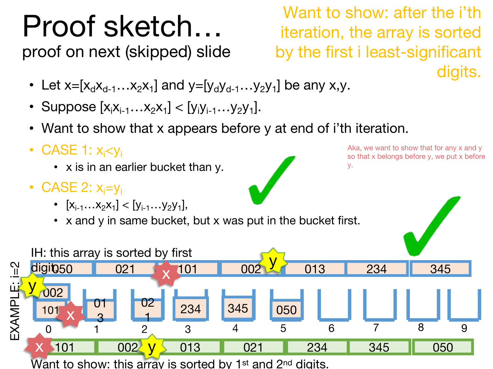
x와 노란 별에 적힌 y가 두 수의 위치를 추적합니다 — 맨 위 분홍 배열(귀납 가설이 성립하는 상태)에서 x는 234 근처, y는 021 근처에 표시되어 있고, 가운데 버킷 단계를 거쳐 맨 아래 초록 배열에서 x가 y보다 왼쪽에 오게 된 것을 볼 수 있습니다. 오른쪽 분홍 글씨의 주석이 증명의 목표를 다시 말해 줍니다 — “\(x\)가 \(y\)보다 앞에 와야 하는 모든 \(x, y\)에 대해 실제로 \(x\)를 \(y\) 앞에 놓는다는 것을 보이려는 것”입니다. 원본 슬라이드에서 아래쪽 예시의 설명 글이 화면 밖으로 조금 잘려 있습니다.증명. \(x = [x_d x_{d-1} \ldots x_2 x_1]\)과 \(y = [y_d y_{d-1} \ldots y_2 y_1]\)을 임의의 두 수라 하고, 아래 \(i\)자리만 잘라 본 값에 대해
\[[x_i x_{i-1} \ldots x_2 x_1] \;<\; [y_i y_{i-1} \ldots y_2 y_1]\]
이 성립한다고 합시다. \(i\)번째 반복이 끝났을 때 \(x\)가 \(y\)보다 앞에 나타남을 보이면 됩니다.
- CASE 1: \(x_i < y_i\).
- \(x\)는 \(y\)보다 앞선 번호의 버킷에 들어갑니다.
- 버킷을 번호 순으로 이어 붙이므로, \(i\)번째 반복 후 \(x\)는 \(y\)보다 앞에 옵니다. \(\checkmark\)
- CASE 2: \(x_i = y_i\).
- \(x\)와 \(y\)는 같은 버킷에 들어갑니다.
- 이 경우 가정에서 맨 앞자리가 같으므로 \([x_{i-1} \ldots x_2 x_1] < [y_{i-1} \ldots y_2 y_1]\)이고, 귀납 가설에 의해 \(i-1\)번째 반복 후에 이미 \(x\)가 \(y\)보다 앞에 있었습니다.
- 그렇다면 \(x\)가 \(y\)보다 먼저 버킷에 들어갔고, 버킷이 선입선출 큐이므로 먼저 나옵니다.
- 따라서 \(i\)번째 반복 후에도 \(x\)가 \(y\)보다 앞에 옵니다. \(\checkmark \;\blacksquare\)
두 경우가 전부인 이유도 짚어 둘 만합니다. 가정한 부등식에서 두 수의 가장 높은 자리가 \(x_i\)와 \(y_i\)인데, 만약 \(x_i > y_i\)라면 \([x_i \ldots x_1] > [y_i \ldots y_1]\)이 되어 가정에 어긋납니다. 그러므로 \(x_i < y_i\) 또는 \(x_i = y_i\)뿐입니다.
CASE 2가 이 증명의 전부라고 해도 지나치지 않습니다. 만약 버킷이 후입선출(스택)이었다면 같은 버킷에 들어간 \(x\)와 \(y\)의 순서가 뒤집혀 나오고, 직전 반복에서 애써 만들어 둔 아래 \(i-1\)자리의 정렬이 매번 파괴됩니다. 그러면 귀납이 성립하지 않고 알고리즘도 틀립니다.
§4.2의 그림에 적혀 있던 “버킷은 연결 리스트로 구현하며 선입선출입니다. 이것이 나중에 유용할 것입니다”라는 한 줄이 회수되는 자리가 정확히 여기입니다. 참고로 이렇게 같은 값을 가진 원소들의 원래 순서를 보존하는 정렬의 성질을 표준 교과서에서는 안정성(stability)이라 부르며, RadixSort가 동작하려면 각 반복에 쓰이는 정렬이 반드시 안정적이어야 합니다.
4.6 실행 시간은 얼마인가 (What Is the Running Time?)
\(d\)자리 수 \(n\)개를 십진법으로 RadixSort한다고 하겠습니다. 예를 들어 \(n=7\), \(d=3\)이면 [021, 345, 013, 101, 050, 234, 001] 같은 배열입니다.
- 반복은 몇 번인가? → \(d\)번입니다. 자릿수마다 한 번씩 돌기 때문입니다.
- 각 반복은 얼마나 걸리는가? → 버킷 열 개를 초기화하는 시간에, \(n\)개의 수를 열 개의 버킷에 넣는 시간을 더해 \(O(n)\)입니다.
- 전체 실행 시간은? → \(O(nd)\)입니다.
4.7 그다지 좋아 보이지 않습니다 (This Doesn’t Seem So Great)
\(O(nd)\)라는 결과를 구체적인 상황에 넣어 보면 김이 빠집니다.
- \(\{1, 2, \ldots, n\}\) 범위의 정수 \(n\)개를 정렬한다고 합시다.
- 이때 자릿수는 \(d = \lfloor \log_{10}(n) \rfloor + 1\)입니다.
- 예를 들어 \(n = 1234\)이면 \(\lfloor \log_{10}(1234) \rfloor + 1 = 4\)입니다.
- 따라서 실행 시간은 다음과 같습니다.
\[\text{Time} \;=\; O(nd) \;=\; O(n \log n)\]
- MergeSort와 같습니다!
\(O(n\log n)\)의 벽을 넘으려고 모형까지 바꿨는데, 결국 같은 자리로 돌아온 셈입니다. 무엇이 잘못되었는지는 §4.9에서 밝혀지는데, 문제는 알고리즘이 아니라 밑을 \(10\)으로 고정한 것입니다.
4.8 여담: 왜 \(d = \lfloor \log_{10}(n) \rfloor + 1\)인가 (Aside)
슬라이드가 한 장을 따로 할애해 이 식을 유도합니다. 자릿수와 로그의 관계는 뒤의 일반화(\(\log_r\))에서 계속 쓰이므로 짚고 넘어가겠습니다.
수 \(x = [x_d x_{d-1} \ldots x_1]\)을 십진법으로 쓴다는 것은 다음을 뜻합니다.
\[x = x_1 + x_2 \cdot 10 + \cdots + x_{d-1}\cdot 10^{d-2} + x_d \cdot 10^{d-1}, \qquad x_i \in \{0, 1, \ldots, 9\}\]
이제 최고 자릿수가 \(0\)이 아니라고, 곧 \(x_d \neq 0\)이라고 합시다.
① 위에서 누르기.
\[ \begin{aligned} x &\ge x_d \cdot 10^{d-1} && (x \text{는 그 합의 마지막 항 하나보다 크므로}) \\ \log_{10}(x) + 1 - \log_{10}(x_d) &\ge d && (\text{양변에 로그를 취하고 정리}) \\ \log_{10}(x) + 1 &\ge d && (x_d > 0 \text{이므로 } \log_{10}(x_d) \ge 0) \\ \lfloor \log_{10}(x) \rfloor + 1 &\ge d && (d \text{가 정수이므로}) \end{aligned} \]
② 아래에서 누르기.
\[ \begin{aligned} x &< (x_d + 1)\cdot 10^{d-1} && (\text{그렇지 않다면 } d\text{번째 자릿수가 } x_d+1 \text{이었을 것이므로}) \\ \log_{10}(x) + 1 - \log_{10}(x_d + 1) &< d && (\text{양변에 로그를 취하고 정리}) \\ \log_{10}(x) &< d && (x_d < 10 \text{이므로 } \log_{10}(x_d+1) \le 1) \\ \lfloor \log_{10}(x) \rfloor + 1 &\le d && (d \text{가 정수이므로}) \end{aligned} \]
두 부등식을 합치면 \(d = \lfloor \log_{10}(x) \rfloor + 1\)입니다. 원본 슬라이드는 마지막 두 줄에서 \(x\) 대신 \(n\)으로 적고 있는데, 이는 §4.7처럼 값의 상한이 \(n\)인 경우에 이 식을 바로 적용하기 위함입니다. 본문에서는 혼동을 피하려고 대상이 되는 수를 \(x\)로 통일했습니다.
4.9 더 잘할 수 있을까: 밑을 바꾸자 (Can We Do Better?)
- 밑이 \(10\)인 RadixSort는 그리 좋은 생각이 아닌 것 같습니다…
- 그렇다면 밑을 바꾸면 어떨까요? (밑을 \(r\)이라 하겠습니다.)
- 여기에는 상충 관계(trade-off)가 있습니다.
- \(r\)이 크면 버킷이 더 많이 필요합니다.
- \(r\)이 크면 자릿수가 더 적어집니다.
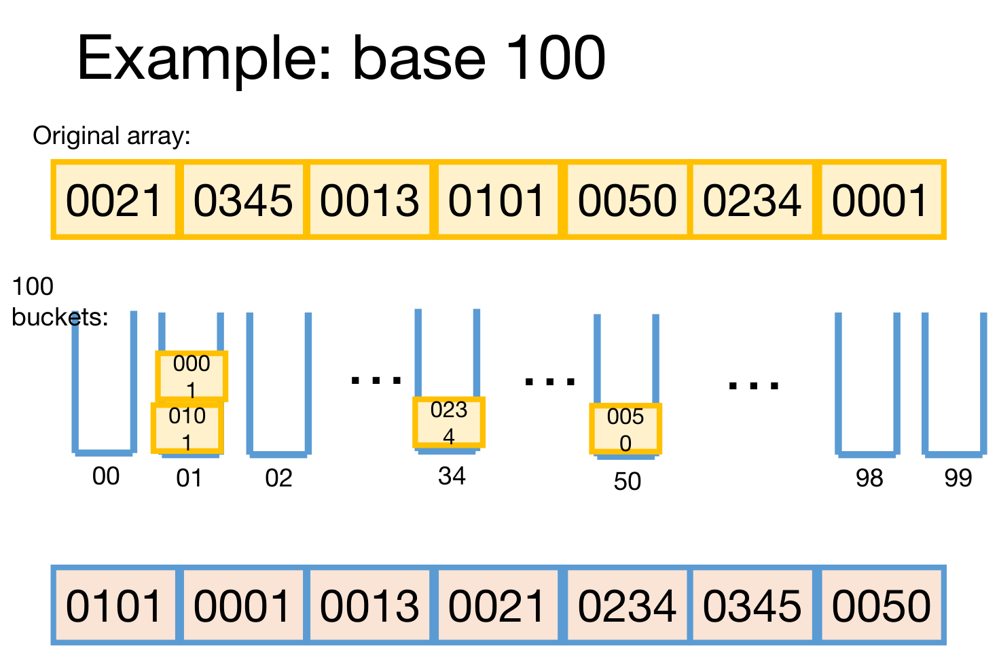
[0021, 0345, 0013, 0101, 0050, 0234, 0001]이고, 왼쪽 검은 글씨 “100 buckets”가 말하듯 이번에는 버킷이 \(00\)부터 \(99\)까지 백 개입니다(그림의 …는 생략된 버킷들입니다). 밑이 \(100\)이므로 한 “자리”는 아래 두 자리를 묶은 값이며, 따라서 0001과 0101은 아래 두 자리가 모두 \(01\)이라 같은 버킷 \(01\)에 들어가고, 0234는 버킷 \(34\), 0050은 버킷 \(50\)에 들어갑니다. 맨 아래 분홍 배열이 이어 붙인 결과 [0101, 0001, 0013, 0021, 0234, 0345, 0050]으로, 아래 두 자리 기준으로 정렬되어 있습니다.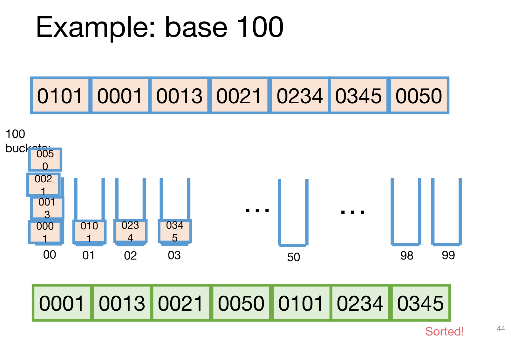
0050·0021·0013·0001은 모두 버킷 \(00\)에 앞 순서를 유지한 채 쌓이고, 0101은 버킷 \(01\), 0234는 버킷 \(02\), 0345는 버킷 \(03\)에 들어갑니다. 맨 아래 초록 배열 [0001, 0013, 0021, 0050, 0101, 0234, 0345]가 최종 결과이며 오른쪽 아래 붉은 글씨 Sorted!가 이를 확인해 줍니다. 밑이 \(10\)일 때 세 번 필요했던 반복이 두 번으로 줄었습니다.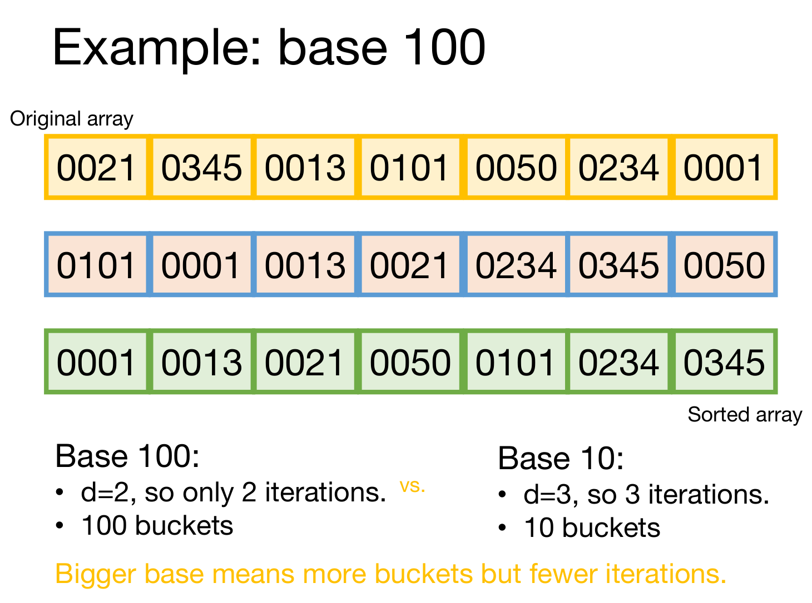
4.10 RadixSort의 일반 실행 시간 (General Running Time of RadixSort)
이제 밑을 \(r\)로 두고 일반적으로 계산해 보겠습니다. 정렬 대상은 크기가 최대 \(M\)인 정수 \(n\)개입니다.
- RadixSort의 반복 횟수
- 크기가 최대 \(M\)인 정수를 밑 \(r\)로 적었을 때의 자릿수와 같습니다.
- §4.8의 유도를 밑 \(r\)로 바꾸면 \(d = \lfloor \log_r(M) \rfloor + 1\)입니다.
- 반복당 시간
- 버킷 \(r\)개를 초기화하고, 원소 \(n\)개를 그 버킷들에 넣습니다.
- 총 \(O(n + r)\)입니다.
- 전체 시간
\[O\bigl(d \cdot (n + r)\bigr) \;=\; O\Bigl(\bigl(\lfloor \log_r(M)\rfloor + 1\bigr)\cdot (n+r)\Bigr)\]
이 식 안에 §4.9의 상충 관계가 그대로 들어 있습니다. \(r\)을 키우면 \(\lfloor\log_r(M)\rfloor + 1\)은 줄어들지만 \((n+r)\)이 커집니다.
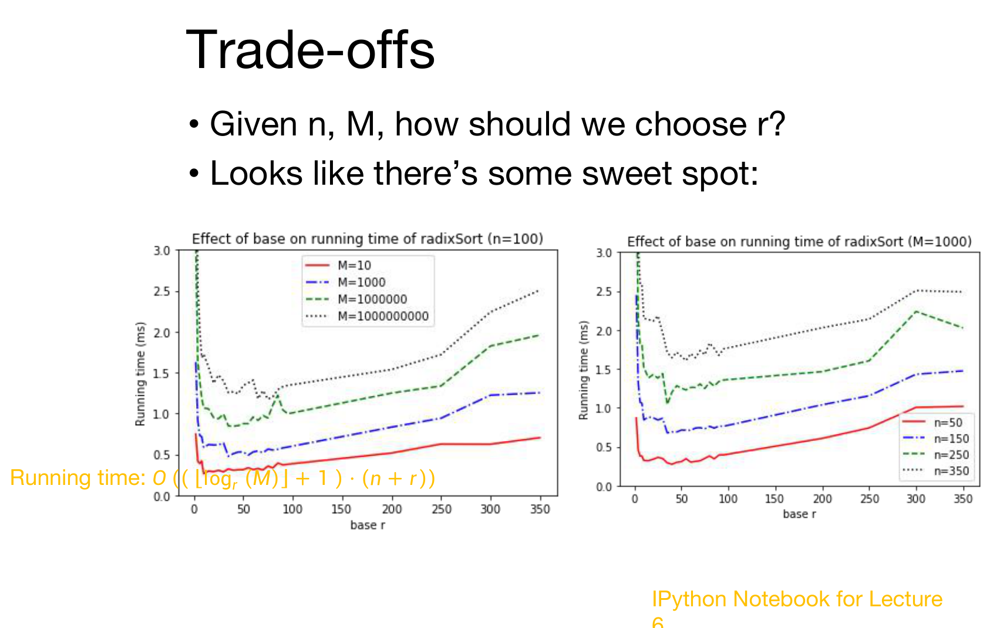
합리적인 선택: \(r = n\). 슬라이드가 제시하는 직관은 단순합니다 — 식 \(O\bigl((n+r)(\lfloor \log_r(M)\rfloor+1)\bigr)\) 안의 \(n\)과 \(r\)의 균형을 맞추라는 것입니다. \(r\)을 \(n\)보다 훨씬 작게 잡으면 \((n+r)\)은 거의 줄지 않으면서 반복 횟수만 늘고, \(r\)을 \(n\)보다 훨씬 크게 잡으면 반복 횟수는 거의 줄지 않으면서 버킷 비용만 늡니다. 그래서 \(r = n\)으로 두면 \(n + r = 2n = O(n)\)이 되어, 크기가 최대 \(M\)인 정수 \(n\)개를 정렬하는 시간은 다음과 같습니다.
\[O\Bigl(n \cdot \bigl(\lfloor \log_n(M)\rfloor + 1\bigr)\Bigr)\]
슬라이드는 보라색 글씨로 두 개의 열린 질문을 남깁니다 — “\(r=n\)은 꽤 좋은 선택입니다. 점근적 실행 시간을 최적화하는 \(r\)은 무엇일까요? 공간까지 신경 쓴다면 어떨까요?”
4.11 여기까지 배운 것 (What Have We Learned?)
- RadixSort는 크기가 최대 \(n^{100}\)인 정수 \(n\)개를 \(O(n)\) 시간에 정렬할 수 있으며, 정수 \(O(n)\)개를 담을 공간이 필요합니다.
- 슬라이드의 주석대로 \(100\) 자리에는 어떤 상수를 넣어도 됩니다.
- 정수의 크기가 \(n\)보다 훨씬훨씬 큰 경우(\(2^n\) 같은), RadixSort를 쓰지 않는 편이 나을 수 있습니다.
- 밑을 어떻게 고르는지가 중요합니다.
앞의 식에 값을 대입해 보면 이 세 문장이 왜 나오는지 바로 보입니다.
- \(M = n^{100}\), \(r = n\)이면 \(\log_n(n^{100}) = 100\)이므로 \(d = 101\)이고, 전체 시간은 \(O(101 \cdot n) = O(n)\)입니다. 지수의 \(100\)은 상수이므로 점근 표기 안으로 흡수됩니다.
- \(M = 2^n\), \(r = n\)이면 \(\log_n(2^n) = \dfrac{n}{\log_2 n}\)이므로 전체 시간은 \(O\!\left(\dfrac{n^2}{\log_2 n}\right)\)이 되어, \(O(n\log n)\)인 MergeSort보다 한참 느립니다.
즉 RadixSort의 \(O(n)\)은 값의 크기가 \(n\)의 다항식 범위 안에 있을 때의 이야기이며, 그 범위를 벗어나면 비교 기반 정렬로 돌아가는 편이 낫습니다.
5. 되짚어보기 (Recap)
- 정렬이 얼마나 어려운가는 계산 모형에 달려 있습니다.
- 어떤 계산 모형이 얼마나 합리적인가는 논쟁의 여지가 있습니다.
비교 기반 정렬 모형
- MergeSort, QuickSort, InsertionSort가 여기 속합니다.
- 이 모형의 어떤 알고리즘도 최소 \(\Omega(n\log n)\)번의 연산을 써야 합니다. ☹
- 그러나 임의의 비교 가능한 객체를 다룰 수 있습니다. ☺
작은 정수(또는 그 밖의 합리적인 데이터)를 정렬한다면
- CountingSort와 RadixSort가 있습니다.
- 둘 다 \(O(n)\) 시간에 동작합니다. ☺
- 정수가 너무 커지면 공간을 더 쓰거나 더 느려질 수 있습니다. ☹
두 모형의 관계를 표로 대비하면 다음과 같습니다.
| 비교 기반 모형 | 값을 읽는 모형 | |
|---|---|---|
| 원소에 허용된 연산 | 두 원소의 대소 비교만 | 값을 직접 읽어 버킷 번호로 사용 |
| 대표 알고리즘 | MergeSort, QuickSort, InsertionSort | CountingSort, RadixSort |
| 하한 | \(\Omega(n\log n)\) (결정론·무작위 모두) | 이 하한이 적용되지 않음 |
| 달성 가능한 시간 | \(O(n\log n)\) — MergeSort가 최적 | \(O(n)\) (값의 크기가 \(n\)의 다항식일 때) |
| 적용 범위 | 순서가 정의된 모든 객체 | 값을 미리 알고 범위가 크지 않은 데이터 |
| 추가 비용 | 없음 | 버킷을 위한 \(O(n + r)\) 공간 |
정리하며 (Closing Remarks)
이번 강의의 논증 사슬을 단계별로 압축하면 다음과 같습니다.
| 단계 | 내용 | 근거 |
|---|---|---|
| ① 질문의 재정의 | “\(O(n\log n)\)보다 빠르게 정렬할 수 있는가”는 계산 모형을 지정하기 전에는 답할 수 없는 질문이다 | “누구에게 묻느냐에 달렸다” |
| ② 모형의 고정 | 비교 기반 정렬 모형 — 값을 읽지 못하고 두 원소의 대소만 물을 수 있다. 우리가 아는 정렬 알고리즘이 전부 여기 속한다 | MergeSort · QuickSort · InsertionSort |
| ③ 증명 전략의 전환 | 알고리즘을 하나씩 분석하는 대신, 모든 알고리즘이 공유하는 형태인 결정 트리로 옮겨 그 형태를 분석한다 | “그러지 마시오(Don’t do that)” |
| ④ 시간 = 경로 길이 | 특정 입력의 실행 시간은 뿌리에서 그 잎까지의 경로 길이 이상이고, 최악의 경우는 가장 긴 경로, 곧 트리의 깊이 이상이다 | 내부 노드 하나 = 비교 한 번 |
| ⑤ 잎의 개수 | 답이 \(n!\)가지이고 서로 다른 답은 서로 다른 잎에 있어야 하므로, 잎은 \(n!\)개 이상이다 | 두 답이 한 잎을 공유하면 하나는 틀린다 |
| ⑥ 깊이의 하한 | 깊이 \(d\)인 이진 트리의 잎은 최대 \(2^d\)개이므로 \(2^d \ge n!\), 곧 \(d \ge \log_2(n!)\)이다 | 완전 균형 트리가 가장 얕다 |
| ⑦ 점근식으로 변환 | 스털링 근사 \(n! \approx (n/e)^n\)에서 \(\log_2(n!) \approx n\log_2 n - n\log_2 e = \Omega(n\log n)\) | 둘째 항은 상수배 항이라 흡수된다 |
| ⑧ 두 방향의 결론 | 비교 기반 정렬은 \(\Omega(n\log n)\)을 넘을 수 없고(무작위 알고리즘도 기댓값으로 동일), 동시에 MergeSort는 최적임이 확정된다 | 하한과 상한이 만나는 지점 |
| ⑨ 모형의 교체 | 벽은 정렬이 아니라 모형에 있으므로, 원소의 값을 직접 읽는 모형으로 옮기면 버킷에 던져 넣는 것만으로 \(O(n)\)에 정렬된다 | CountingSort |
| ⑩ 교체의 대가 | 값의 범위만큼 버킷이 필요하므로, 값이 크거나 흩어져 있으면 메모리가 폭발한다 | \(2^{1000}\)짜리 원소 하나의 반례 |
| ⑪ 대가의 분할 상환 | 값 전체 대신 자릿수 하나씩 CountingSort를 반복하면 버킷 수는 밑에 고정되고 반복 횟수만 늘어난다 | RadixSort, 낮은 자리부터 |
| ⑫ 정확성의 열쇠 | 귀납 가설 “\(k\)번 반복 후 아래 \(k\)자리로 정렬됨”이 유지되는 것은 버킷이 선입선출이기 때문이다 | 귀납 단계 CASE 2 |
| ⑬ 밑의 최적화 | 시간은 \(O\bigl((\lfloor\log_r M\rfloor+1)(n+r)\bigr)\)이고 \(n\)과 \(r\)의 균형점인 \(r=n\)이 합리적이다 | 실측 그래프의 최적점 |
| ⑭ 최종 위치 | \(M\)이 \(n\)의 다항식이면 \(O(n)\), \(M = 2^n\)이면 \(O(n^2/\log n)\)이 되어 비교 기반 정렬보다 느려진다 | \(\log_n(n^{100}) = 100\) 대 \(\log_n(2^n) = n/\log_2 n\) |